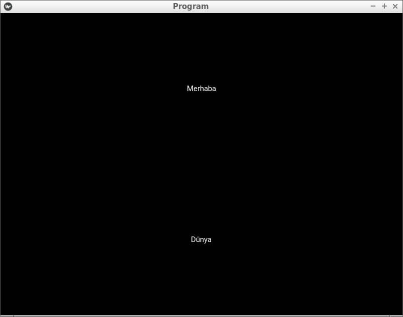
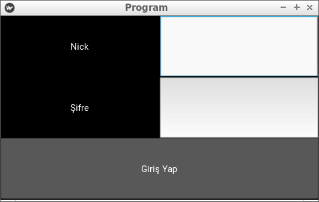

Pencere düzenleri¶
Merhaba arkadaşlar. Bir önceki yazıda, Kivy ile ilk programımızı yazdık,kv diline kısaca göz attık ve programımıza dair bazı özellikleri tanıdık.
Hatırlarsanız bir önceki derste ekrana “Merhaba Dünya” yazmıştık. Tabi ki programlar bu kadar basit olamaz. Yani ekranda başka araçlar da olacaktır. Buton, Metin giriş alanı, Seçim kutuları gibi araçlar da olacaktır elbette.
Bu pencere araçlarını ekranda gösterirken belli bir düzen içerisinde yerleştirmeliyiz ki, programın görüntüsü güzel olsun ve kullanıcıyı memnun etsin. Şimdi adım adım pencere düzenlerimizi tanımaya başlayalım.
Not
Pencere düzenleri bu kadarıyla sınırlı değil. Burada en çok kullanılanlar anlatılmıştır
BoxLayout¶
kivy.uix.boxlayout.BoxLayout
Bu pencere düzeni, içerisine yerleştirilen araçları yan yana veya alt alta yerleştirir. Hemen bir örnekle görelim.
from kivy.app import App
from kivy.uix.label import Label
from kivy.uix.boxlayout import BoxLayout
class Program(App):
def build(self):
duzen = BoxLayout()
yazi1 = Label(text = "Merhaba")
yazi2 = Label(text = "Dünya")
duzen.add_widget(yazi1)
duzen.add_widget(yazi2)
return duzen
Program().run()
Ekran görüntüsü

Şimdi sıra ile kodumuzu inceleyelim.İlk satırda App sınıfını import ettik. Daha sonra ekrana yazı yazmamızı sağlayan Label sınıfını import ettik. Ve son olarak, pencere düzenimiz olan BoxLayout sınıfını import ettik.
Bir pencere düzenini kullanabilmek için öncelikle onu tanımlamanız gerekir. duzen isminde bir değişkenle tanımladık ve iki adet yazımızı bu düzenin içine add_widget() fonksiyonu ile ekledik. Bir pencere düzeninin içerisine pencere aracı eklemek için add_widget() fonksiyonu kullanılır. Bir pencere aracını kaldırmak için ise, remove_widget() fonksiyonu kullanılır.
Eğer BoxLayout pencere düzenini tanımlarken herhangi bir parametre vermezseniz elemanları yanyana dizecektir. Eğer alt alta dizmesini isterseniz orientation parametresini kullanmanız gerekir.
Örnek;
from kivy.app import App
from kivy.uix.label import Label
from kivy.uix.boxlayout import BoxLayout
class Program(App):
def build(self):
duzen = BoxLayout(orientation = "vertical")
yazi1 = Label(text = "Merhaba")
yazi2 = Label(text = "Dünya")
duzen.add_widget(yazi1)
duzen.add_widget(yazi2)
return duzen
Program().run()
Ekran görüntüsü
Gördüğünüz gibi eklenen elemanları alt alta yerleştirdi. Peki ikisini birarada kullanabileceğimiz bir örnek yapabilir miyiz? Evet. Bir kullanıcı giriş ekranı yapalım. Ama sadece görüntü olarak, yani herhangi bir işlem yapmayacak. Sadece pencere düzenini göstermek için yapacağız.
Amacımız şuna benzer bir pencere oluşturmak;

Hem alt alta elemanlar var, hem de yan yana. Şimdi böyle bir pencereyi nasıl oluşturacağımızı görelim.
from kivy.app import App
from kivy.uix.label import Label
from kivy.uix.boxlayout import BoxLayout
from kivy.uix.button import Button
from kivy.uix.textinput import TextInput
class Program(App):
def build(self):
self.anaDuzen = BoxLayout(orientation = "vertical") # Elemanların hepsini tutan ana pencere düzenimiz
self.ilkSatir = BoxLayout()
self.ikinciSatir = BoxLayout()
self.nick = Label(text = "Nick")
self.nickKutu = TextInput()
self.sifre = Label(text = "Şifre")
self.sifreKutu = TextInput()
self.buton = Button(text = "Giriş Yap")
self.ilkSatir.add_widget(self.nick)
self.ilkSatir.add_widget(self.nickKutu)
self.ikinciSatir.add_widget(self.sifre)
self.ikinciSatir.add_widget(self.sifreKutu)
# Şimdi hepsini ana düzene yerleştiriyoruz
self.anaDuzen.add_widget(self.ilkSatir)
self.anaDuzen.add_widget(self.ikinciSatir)
self.anaDuzen.add_widget(self.buton)
return self.anaDuzen
Program().run()
Ekran görüntüsü
Şimdi kodumuzu adım adım inceleyelim. Yukarıda gördüğünüz gibi Button ve TextInput sınıflarını import ettik. Button sınıfı ile butonlar oluşturabiliriz. Butona tıklandığında yapılmasını istediğimiz işlemler tanımlayabiliriz. Ancak bu derste pencere düzenlerini incelediğimiz için butonumuza herhangi bir görev vermedik.
TextInput, kullanıcıdan girdi almayı sağlar. Böylece kullanıcı ile iletişime geçebiliriz, girdilere göre işlemler yapabiliriz.
Örneğimiz 3 tane BoxLayout düzeninden oluşuyor. Birincisi, tüm elemanları alt alta tutacak olan “anaDuzen”, İkincisi Nick ve Nick girme kutusunu yan yana tutacak olan “ilkSatir”, ve sonuncusu Şifre ve Şifre girme kutusunu yan yana tutacak olan “ikinciSatir”. Butonumuzu sadece anaDuzen’e eklememiz yeterli.Unutmayın bir pencere düzeninin içine başka bir pencere düzeni ekleyebilirsiniz.
Peki bu örneğimizi kv dili ile yazsaydık nasıl olurdu? Hemen bakalım
BoxLayout:
orientation: "vertical"
BoxLayout:
Label:
text:"Nick"
TextInput:
BoxLayout:
Label:
text:"Şifre"
TextInput:
Button:
text:"Giriş Yap"
BoxLayout ile ilgili bu kadar örnek yeterli sanırım. Siz de kendinize göre örnekler yaparak veya verilen örnekleri inceleyip değiştirerek konuyu pekiştirebilirsiniz.
FloatLayout¶
kivy.uix.floatlayout.FloatLayout
FloatLayout pencere düzeni, araçları istediğimiz boyutta ve koordinatta yerleştirebileceğimiz bir pencere düzenidir. Her zaman olduğu gibi önce import etmeliyiz ve kullanmak üzere tanımlamalıyız. Bir örnek yapalım
#!/usr/bin/env python
# -*- coding:utf-8 -*-
from kivy.app import App
from kivy.uix.button import Button
from kivy.uix.floatlayout import FloatLayout
# gerekli sınıfları import ettik
class Program(App):
def build(self):
duzen = FloatLayout() # pencere düzenimizi tanımladık
buton = Button(text = "Merhaba",
size_hint = (.1,.1),
pos = (10,10))
duzen.add_widget(buton) # butonumuzu yerleştiriyoruz
return duzen
Program().run()
Ekran görüntüsü

Butonumuzu tanımlarken size_hint ve pos şeklinde iki tane parametre verdik. Bunlardan size_hint parametresi, butonumuzun ekrana orantılı bir şekilde boyutlandırılması içindir. Yani, .1 yazdığımızda, pencerenin boyutunun 10’da 1’i kadar genişlikte ve yükseklikte boyutlandırılır. Eğer .5 yazsaydık ekranın boyutunun yarısı kadar olacaktı.Bu arada Python’da .X gösterimi 0.X gösterimi ile aynıdır, bunu da burada belirtmiş olalım.
size_hint ile butonumuzun boyutlarını belirledikten sonra, pos parametresi ile FloatLayout pencere düzenindeki yerini belirledik. pos = (10,10) yani sıra ile 10 pixel soldan uzaklık, 10 pixel aşağıdan uzaklık şeklinde tanımlanır. Kivy’de (0,0) noktası sol-alt köşedir.
Eğer butonumuza bu parametreleri vermeden pencere düzenimize eklersek, tüm ekranı dolduracak şekilde boyutlandırılacaktır.
FloatLayout pencere düzenimizin de boyutunu ayarlayabiliriz. Bunun için
duzen = FloatLayout(size = (300,300))
gibi bir tanımlama yapmamız yeterli. Aynı şekilde pencereye orantılı olmasını istersek, size_hint parametresini de verebiliriz. Bir örnekle beraber görelim
#!/usr/bin/env python
# coding:utf-8
from kivy.app import App
from kivy.uix.button import Button
from kivy.uix.floatlayout import FloatLayout
# gerekli sınıfları import ettik
class Program(App):
def build(self):
duzen = FloatLayout(size_hint = (.5,.5)) # pencere boyutunun yarısı kadar
buton = Button(text = "Merhaba") # FloatLayout pencere düzenimizi tam doldursun diye, parametre vermedik
duzen.add_widget(buton) # butonumuzu yerleştiriyoruz
return duzen
Program().run()
Ekran görüntüsü

FloatLayout pencere düzenine eklenen araçların, ekrana orantılı bir şekilde yerleştirilmesini istersek, pos_hint parametresini kullanabiliriz.Böylece penceremizin boyutu ne olursa olsun, orantılı bir şekilde yerleştirilecektir. Aşağıdaki kodları çalıştırıp pencerenin boyutlarıyla oynarsanız, ne demek istediğimi çok daha iyi anlarsınız.
Kullanımı şu şekilde;
#!/usr/bin/env python
# coding:utf-8
from kivy.app import App
from kivy.uix.button import Button
from kivy.uix.floatlayout import FloatLayout
# gerekli sınıfları import ettik
class Program(App):
def build(self):
duzen = FloatLayout()
button = Button(text='Hello world', size_hint=(.2, .1),
pos_hint={'x':.2, 'y':.2})
duzen.add_widget(button) # butonumuzu yerleştiriyoruz
return duzen
Program().run()
FloatLayout pencere düzeni ile ilgili anlatacaklarımız bu kadar. FloatLayout pencere düzeni, üzerinde serbest konumlandırma yapıldığı için animasyon için uygundur. Sadece örnek olması açısından, aşağıdaki kodu çalıştırın ve ne olduğunu görün. Kodu anlamanızı istemiyorum, ileride zaten anlatacağız, sadece kodun sonuçlarını görmeniz yeterli.
#!/usr/bin/env python
# coding:utf-8
from kivy.app import App
from kivy.uix.button import Button
from kivy.uix.floatlayout import FloatLayout
from kivy.clock import Clock
# gerekli sınıfları import ettik
class Program(App):
def build(self):
self.x = 0
self.y = 2
self.duzen = FloatLayout()
self.buton = Button(text='Hello world',
size_hint=(.2, .1),
pos = (self.x,self.y))
self.duzen.add_widget(self.buton)
Clock.schedule_interval(self.animasyon,0.1)
return self.duzen
def animasyon(self,event = None):
self.x = self.x + 1
self.buton.pos = (self.x,self.y)
Program().run()
GridLayout¶
kivy.uix.gridlayout.GridLayout
Merhaba arkadaşlar. Bir önceki bölümde FloatLayout pencere düzenini anlattık. FloatLayout, üzerinde koordinat bilgisi ile yerleştirme yapabileceğimiz bir pencere düzenidir diyerek kısa bir tekrar yapmış olalım.
Bu bölümde GridLayout pencere düzenini inceleyeceğiz. GridLayout, ızgara şeklinde yerleştirmeye imkan veren bir pencere düzenidir. Örneğin şöyle bir görüntü elde etmek için GridLayout pencere düzeni kullanılabilir

GridLayout ile ilgili önemli iki kavram vardır. Birincisi rows, yani satır. GridLayout pencere düzeninin max kaç satırdan oluşmasını istiyorsak, rows parametresini kullanırız. Diğeri ise, cols yani sütun. GridLayout pencere düzenimizin max kaç sütundan oluşmasını istiyorsak, cols parametresini kullanabiliriz. Şimdi ayrı ayrı ikisiyle ilgili birer örnek yapalım ve nasıl kullanacağımızı görelim
#!/usr/bin/env python
# -*- coding: utf-8 -*-
from kivy.app import App
from kivy.uix.button import Button
from kivy.uix.gridlayout import GridLayout
class Yazbel(App):
def build(self):
govde = GridLayout(cols = 2)
# Max 2 sütundan oluşmasını istedik
# 2 sütundan sonra alta kayacaktır
# Birden fazla buton ekleyerek nasıl göründüğüne bakalım
# for döngüsü ile ekleyelim
for i in range(10):
govde.add_widget(Button(text = "{}".format(i+1)))
return govde
Yazbel().run()
Bakalım nasıl görünüyor

Gördüğünüz gibi, ne kadar eleman eklersek ekleyelim her zaman 2 sütunu aşmayacak şekilde yerleştiriliyor. Eğer bir sütunun genişliğini biraz daraltmak istersek, aynı sütuna denk gelen elemanlara size_hint_x parametresini vermemiz gerekiyor. Bir örnek üzerinden görelim
#!/usr/bin/env python
# -*- coding: utf-8 -*-
from kivy.app import App
from kivy.uix.button import Button
from kivy.uix.gridlayout import GridLayout
class Yazbel(App):
def build(self):
govde = GridLayout(cols = 2)
# Max 2 sütundan oluşmasını istedik
# 2 sütundan sonra alta kayacaktır
# Birden fazla buton ekleyerek nasıl göründüğüne bakalım
# for kullanarak ekleyelim
for i in range(10):
if(i%2 == 0):
# Aynı sütuna denk gelenler için
govde.add_widget(Button(text = "{}".format(i+1),
size_hint_x = .4))
else:
govde.add_widget(Button(text = "{}".format(i+1)))
return govde
Yazbel().run()

width parametresini de kullanabiliriz
#!/usr/bin/env python
# -*- coding: utf-8 -*-
from kivy.app import App
from kivy.uix.button import Button
from kivy.uix.gridlayout import GridLayout
class Yazbel(App):
def build(self):
govde = GridLayout(cols = 2)
# Max 2 sütundan oluşmasını istedik
# 2 sütundan sonra alta kayacaktır
# Birden fazla buton ekleyerek nasıl göründüğüne bakalım
# for kullanarak ekleyelim
for i in range(10):
if(i%2 == 0):
# Aynı sütuna denk gelenler için
govde.add_widget(Button(text = "{}".format(i+1),
size_hint_x = None,
width = 200))
else:
govde.add_widget(Button(text = "{}".format(i+1)))
return govde
Yazbel().run()
size_hint_x = None kısmını neden yazdığımıza gelirsek, eğer orantılı boyutlandırmaya None değeri vermezsek, width ile boyutu belirlememize izin vermeyecektir. O yüzden None değeri vererek boyutlandırmayı width ile yapabildik.
Şimdi, rows kullanımıyla ile ilgili örnek yapalım.
#!/usr/bin/env python
# -*- coding: utf-8 -*-
from kivy.app import App
from kivy.uix.button import Button
from kivy.uix.gridlayout import GridLayout
class Yazbel(App):
def build(self):
govde = GridLayout(rows = 2)
# Max 2 sütundan oluşmasını istedik
# 2 sütundan sonra alta kayacaktır
# Birden fazla buton ekleyerek nasıl göründüğüne bakalım
# for döngüsü ile ekleyelim
for i in range(10):
govde.add_widget(Button(text = "{}".format(i+1)))
return govde
Yazbel().run()
Aynı şekilde görüldüğü gibi, ne kadar eleman eklersek ekleyelim, her zaman 2 satır olacak şekilde yerleştiriliyor. Boyutlandırmak için, GridLayout nesnemizi tanımlarken row_default_height parametresini vererek, varsayılan yüksekliğini ayarlayabiliriz.
Eğer GridLayout ile ilgili daha çok bilgiye ulaşmak isterseniz, Kivy GridLayout sayfasına bakabilirsiniz.
AnchorLayout¶
kivy.uix.anchorlayout.AnchorLayout
Pencere araçlarını belli yönlere yaslamak isterseniz, AnchorLayout kullanabilirsiniz. Örneğin sağ-yukarı, veya orta-aşağı gibi. Yalnız, bu pencere düzeninin kullanımı biraz farklı. Diğer pencere düzenleri içerisine eklenen elemanları belli bir düzene göre yerleştiriyordu. Ancak AnchorLayout kullanımı bundan farklı, AnchorLayout daha çok içine pencere araçlarının yaslanmasında yardımcı bir eleman olarak düşünülebilir.Bir örnekle sanırım daha iyi anlayabiliriz. Öncelikle pencere düzenini tanımlayalım. Pencere aracımız X ekseninde sola yaslı ve Y ekseninde ortada dursun.
anchor = AnchorLayout(anchor_x = "left",anchor_y = "center")
Şimdi, sol-orta’ya yerleştirilmesini istediğimiz pencere aracını bunun içine koyuyoruz. Örneğin bir buton koyalım. Yalnız bu butonun boyutlarını biz belirlemezsek ekranı kaplayacaktır.
buton = Button(text = "Sol Orta",size_hint = (.2,.2))
anchor.add_widget(buton)
İşte önemli nokta burası. İçine buton eklediğimiz bu pencere düzeni, kendi içinde sol-orta’ya yerleştirmeyecektir. Yerleşim için, bu pencere düzenini FloatLayout gibi bir pencere düzeni içerisinde göstermeliyiz.
self.govde = FloatLayout()
self.govde.add_widget(anchor)
Yerleştirdikten sonra, butonumuz AnchorLayout yardımıyla sol-ortada duracaktır. Şimdi örneği tam olarak verelim.
# coding: utf-8
from kivy.app import App
from kivy.uix.widget import Widget
from kivy.uix.floatlayout import FloatLayout
from kivy.uix.anchorlayout import AnchorLayout
from kivy.uix.button import Button
class AnchorOrnek(App):
def build(self):
self.govde = FloatLayout()
anchor = AnchorLayout(anchor_x = "left",anchor_y = "center")
buton = Button(text = "Sol Orta",size_hint = (.2,.2))
anchor.add_widget(buton)
self.govde.add_widget(anchor)
return self.govde
AnchorOrnek().run()
Programı çalıştırdıktan sonra şöyle bir ekran bizi karşılayacaktır

anchor_x ile kullanılabilecek değerler: “left”,”right”,”center” anchor_y ile kullanılabilecek değerler: “top”,”bottom”,”center”
StackLayout¶
kivy.uix.stacklayout.StackLayout
Stack yani Türkçe karşılığı olarak yığıt, tam da kelime anlamı olarak pencere araçlarını bir tarafa yığarak yerleştirir. Örneğin sağ-yukarı şeklinde tanımladığımızda, eklenen her pencere aracını bu tarafa yığarak yerleştirmeye başlayacaktır. Aşağıdaki png dosyasına bakarak daha iyi anlayabiliriz

İçerisine yerleştirilecek pencere araçlarının boyutunu değiştirmek gerekiyor. Yoksa diğer pencere düzenlerinde de olduğu gibi, tamamen bulunduğu alanı kaplayacak ve diğer pencere araçlarının düzgün bir şekilde yerleştirilmesine engel olacaktır. Şimdi, bir örnekle bu pencere düzenini kullanalım
#coding: utf-8
from kivy.app import App
from kivy.uix.button import Button
from kivy.uix.stacklayout import StackLayout
class Program(App):
def build(self):
govde = StackLayout(orientation = "lr-tb")
for i in range(1,11):
govde.add_widget(Button(text = "{}".format(i),size_hint = (None,None),size = (100,50)))
return govde
Program().run()
Ekran görüntüsü

StackLayout oluştururken kullandığımız orientation parametresi, yerleştirmenin hangi yönlerden hangi yöne olacağını belirtmek için kullanılır. Bu durumda bizim yazdığımız değere bakarsak, lr-tb, Left Right - Top Bottom yani soldan sağa ve yukarıdan aşağı şeklinde. Bu şekilde kullanılabilecek kombinasyonlar
lr-tb tb-lr rl-tb tb-rl lr-bt bt-lr rl-bt bt-rl
Ekranda birden fazla buton oluşturmak için for döngüsü kullandık ve bu butonların boyutunu belirttik. Boyutu sığmayan butonlar otomatik olarak bir alt satıra yerleştirilir, resimde de gördüğünüz gibi.
padding¶
StackLayout çerçevesi ve içerisindeki pencere araçlarının arasında ne kadar boşluk olacağını belirtir. Varsayılan olarak [0,0,0,0]
spacing¶
Yerleştirilen pencere araçları arasında ne kadar boşluk olacağını belirtir. Varsayılan olarak [0,0]
Önemli Not
Sorularınızı yorumlarda dile getirmek yerine Yazbel Forumunda sorarsanız çok daha hızlı cevap alabilirsiniz.Belgelerdeki bir hata veya eksiği dile getirecekseniz lütfen yorumları kullanmak yerine Github'da bir konu (issue) açın.
Eğer yazdığınız yorum içinde kod kullanacaksanız kodlarınızı <pre><code> etiketleri içine alın. Örneğin:
<pre><code class="python">
print("Merhaba Dünya!")
</code></pre>